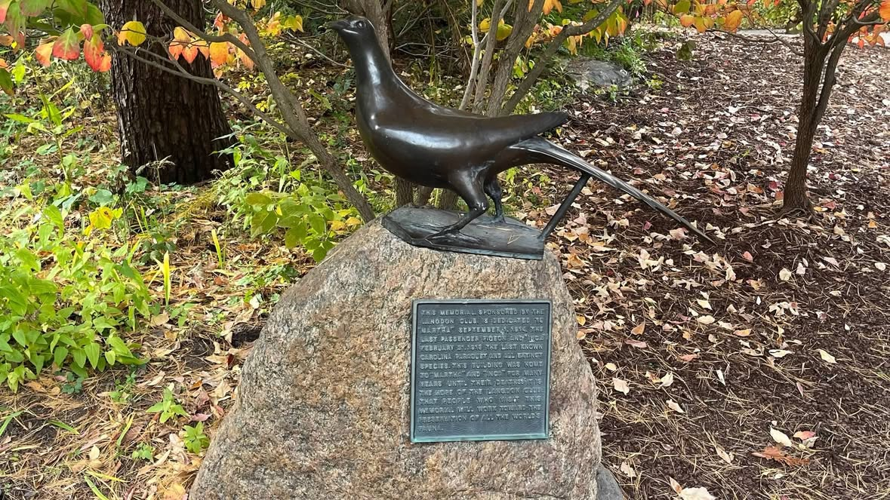

The Passenger Pigeon Memorial
Cincinnati Zoo & Botanical Garden · Photo Tour #38
I made a quiet stop at Cincinnati Zoo, at the memorial to Martha, the last passenger pigeon, in the historic pagoda aviary. Her statue stands outside, and inside, the panels tell how a species that once numbered over five billion was gone within a hundred years. It is a sad story, but an important one, and a conservation lesson worth remembering.

The memorial to Martha, the last passenger pigeon, in the historic pagoda aviary at Cincinnati Zoo. My walk starts outside, at the bronze statue of Martha, and the carved wooden doors of the pagoda building.
Inside, the panels tell the story. In the early 1800s there were over five billion passenger pigeons — bigger than city pigeons, travelling in massive flocks. Commercial hunting for meat, habitat loss, and new technologies like the railways and the telegraph drove the decline, and by 1870 it was steep. Within a hundred years the species was extinct; Martha, the last one, died in 1914.
The last room holds the panel "Martha, the Last Passenger Pigeon," a portrait of Sol Stephan, a historic photo of Martha herself, and newspaper clippings — and models of the pigeons, perched, and in a nest with an egg. It was a quiet stop, and a conservation lesson to end my walk.
I posted this tour on Facebook — open the original post → · same tour on Instagram